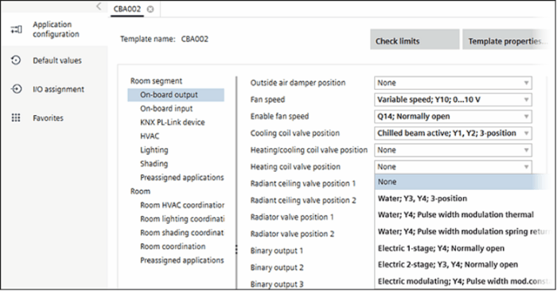

配置功能（模板）
对模板配置所做的更改将应用于与该模板关联的所有设备（现有的和未来的）。
锁定模板 无法配置。
无法配置。
在大多数情况下，更改模板配置将更改对象列表。因此需要一个新的申请号。
Unlocking application templates
有关特定应用程序类型的更多信息，请单击Application help打开所选应用程序类型的帮助。

Select on-board I/O's
- Go to Configuration.
- Open the Application configuration task.
- Open the template.
- Select the On-board output or On-board input configuration section.
- Select an I/O for each feature.
- The discipline feature is activated automatically (i.e., the Supply air VAV position Y10; 0...10 V may activate the HVAC feature Supply air VAV 11, external air flow ctr.).
- Selecting an I/O locks it for further use (dimmed).
- Continue until I/O selection is complete.
- On-board I/O's are now selected.
Assign network peripheral devices
- Select the KNX PL-Link device configuration section.
- Select the network peripheral device.
- The corresponding discipline feature is activated automatically (i.e., the Lighting device 1 feature UP 525/03 may activate the Lighting feature Lighting device 1).
- Continue until all planned network peripheral devices are assigned.
- The network peripheral devices are now assigned.
Configure disciplines and coordination functions
- Select a discipline, e.g., Lighting.
- Check the activated features against your plans and configure as needed.
- Select additional features in the corresponding discipline.
- Continue until all disciplines are configured.
- The features for this template are configured.
- Selecting an I/O or network peripheral device automatically activates the corresponding discipline feature.
Dependencies - Releasing an I/O configuration or network peripheral device may deactivate the corresponding feature configuration.
- Changing a specific feature configuration may change a feature configuration in another tab (as per application type specific rules).
- Changing a feature configuration after setting default values may delete the corresponding parameter setting (Additional parameters).